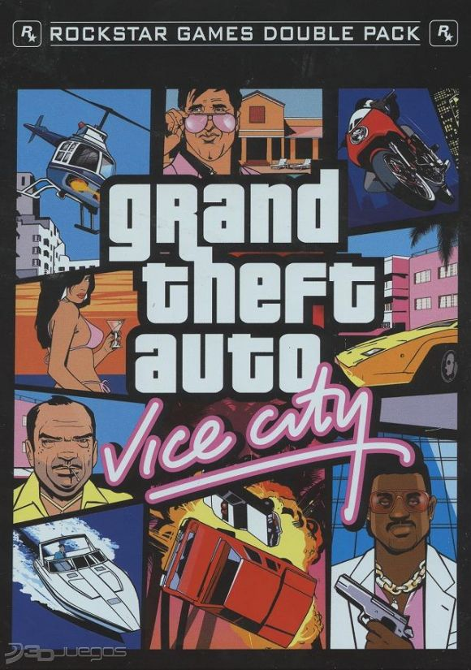
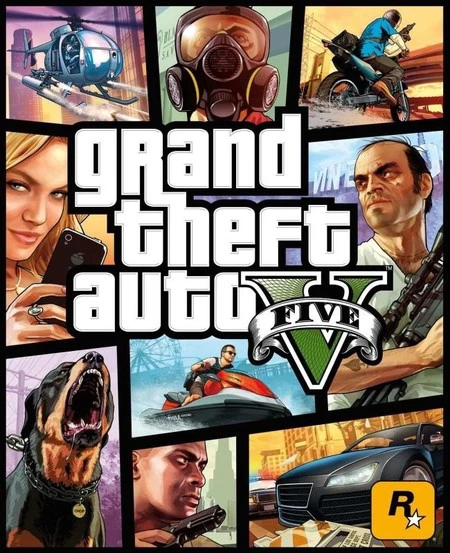
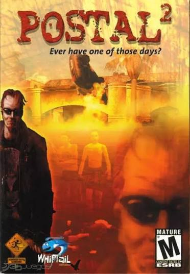
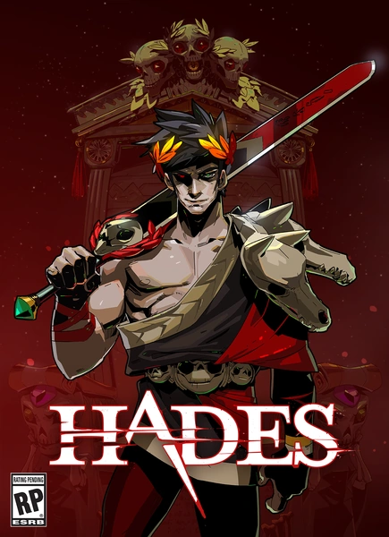
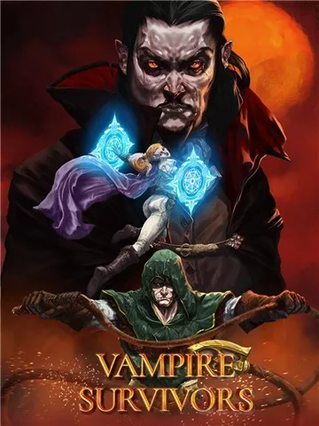
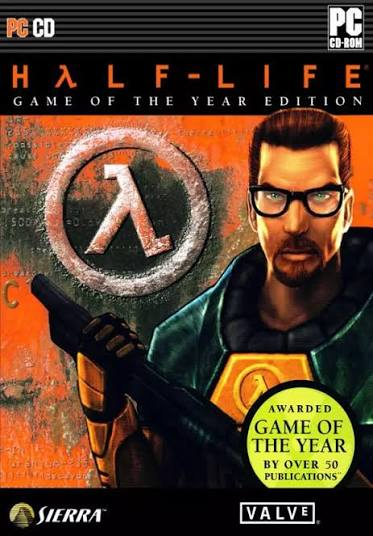
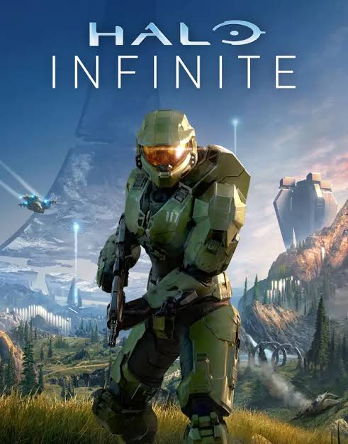
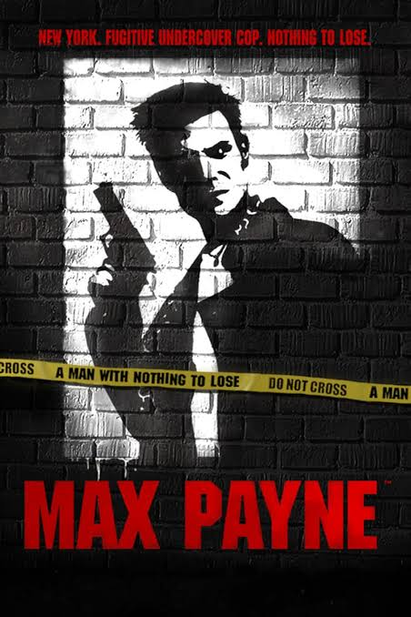

Red Dead Redemption
Una aventura del oeste que sigue a John Marston y su intento por dejar atrás el pasado.
Ver másEl diario del gamer
Mis juegos, mis recuerdos y una partida más.
Quince juegos para explorar mundos, conocer historias y pasar un buen rato. Cada enlace «Ver más» abre una página del juego o de su desarrollador en otra pestaña.
Una aventura del oeste que sigue a John Marston y su intento por dejar atrás el pasado.
Ver más
La historia de Arthur Morgan, un forajido que empieza a cuestionar sus decisiones y su lealtad.
Ver más
Un mundo de bloques para explorar, construir y vivir aventuras a tu manera.
Ver más
Una ciudad de luces y música donde Tommy Vercetti busca hacerse un nombre.
Ver más
CJ regresa a Los Santos y se reencuentra con su familia y su antiguo barrio.
Ver más
Tres protagonistas con vidas distintas se cruzan en una historia de crimen en Los Santos.
Ver más
Partidas de acción donde adaptarse, explorar y jugar en equipo forman parte del desafío.
Ver más
Combates rápidos, armas variadas y nuevos intentos para llegar cada vez más lejos.
Ver más
Un juego de humor negro y situaciones absurdas, con contenido dirigido a adultos.
Ver más
Zagreo intenta escapar del inframundo entre combates y encuentros con dioses griegos.
Ver más
Sobrevive a oleadas de enemigos mientras eliges mejoras y combinas armas.
Ver más
Explora, construye y enfréntate a enemigos en un mundo de aventura en dos dimensiones.
Ver más
Gordon Freeman debe sobrevivir cuando un experimento provoca un desastre en Black Mesa.
Ver más
Una aventura de ciencia ficción con el Jefe Maestro en un misterioso mundo con forma de anillo.
Ver más
Una historia policial de acción que combina la búsqueda de respuestas con combates a cámara lenta.
Ver más